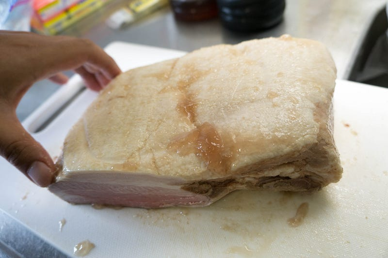
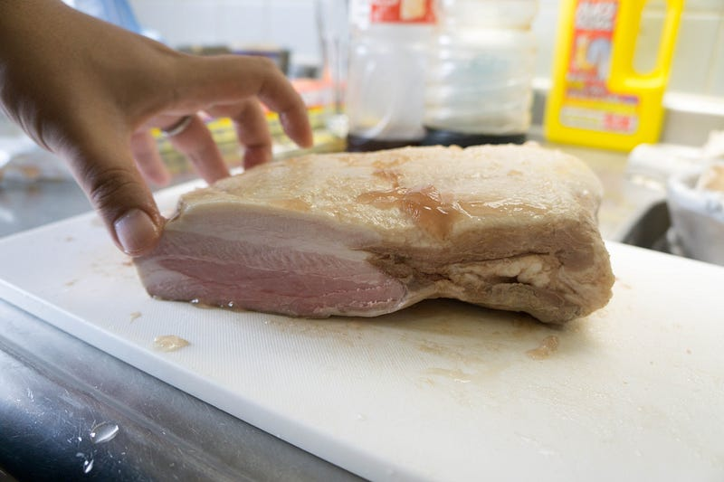
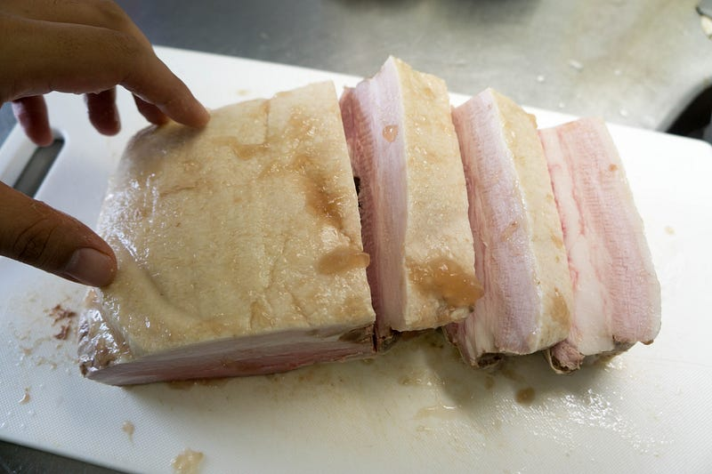
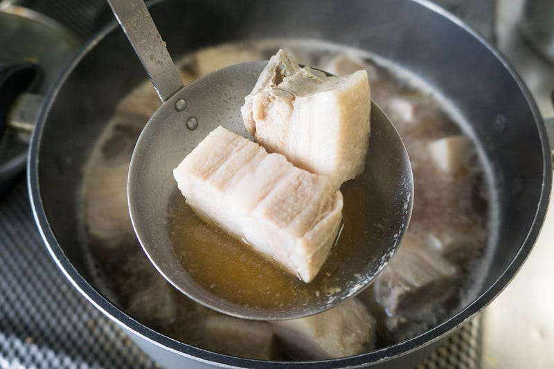
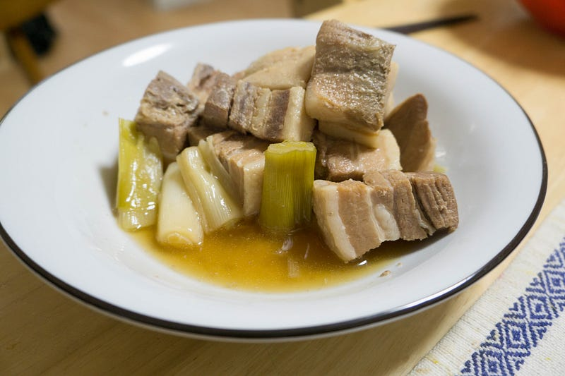

anovaで豚角煮をつくる part 2
anovaで豚角煮をつくる part 2
前に作った豚の角煮はもう一歩！という出来だったので、前回甘酒をつくるついでに豚の角煮も作った。
前回の豚の角煮の挑戦はこちら
前回の甘酒はこちら
前回の反省を踏まえ、今回の豚バラブロックはみっちり8時間やることにする。anovaの温度設定は60℃。
New: Anova Precision Cooker - WIFI 2nd Gen (900 Watts)が卓上IHクッキングヒーターストアでいつでもお買い得。当日お急ぎ便対象商品は、当日お届け可能です。アマゾン配送商品は、通常配送無…amzn.to
今回は調理前の写真を撮り忘れた。使った肉は安かったのでイタリア産ホエー豚、100グラム79円。8時間加熱したあと、そのままあら熱を取り、一晩冷蔵庫に突っ込んでおいた。
結果がこちらです。すでに整形を始めてたので切り口が見えてますね。良い色です。

別アングルからもう一発。

包丁を入れただけでわかるこの柔らかさ。いいですね！期待が持てます。

今回も夏だしあっさり目で行きたいので、和風の味付け。まず酒と水で軽く煮て灰汁を取り、砂糖多め、めんつゆ、醤油を入れ、塩加減の調整のために塩を。

脂が溶け出すくらいまで煮て、一旦休ませる。あら熱がとれたくらいで下ろしショウガをちょいと追加。今回はショウガが売り切れだったのでS&Bのチューブのヤツです。そしてそのまま冷蔵庫へ。
脂が固まったところで脂は分離。ラードとか作りたい人はとっておくんでしょうけど、うちでは使い道がないのでさよならします。
最後に葱を入れて、柔らかくなるまで一煮立ち。葱は本当は臭み取りでいれるんでしょうけど、今回はあまり正体がなくなるまで煮たくなかったので、最後に入れました。

はい、できあがり。ぶりっぶりだけど柔らかく、良い感じにできあがった。ご飯も進む進む。
anovaで豚角煮を作ることの圧倒的良さはやっぱり放っておけることと形が全然崩れないことかも。圧力鍋ではやったことがないけど同じ感じなのかな？
とにかくうまかったし、今回の甘酒のようにどうせバケツ一杯分の水を使って8時間も加熱するような料理をするなら、一緒に肉をやっちゃってもう一つおかずを作っちゃうってのは理にかなってると思う。今後も研究していきたい。